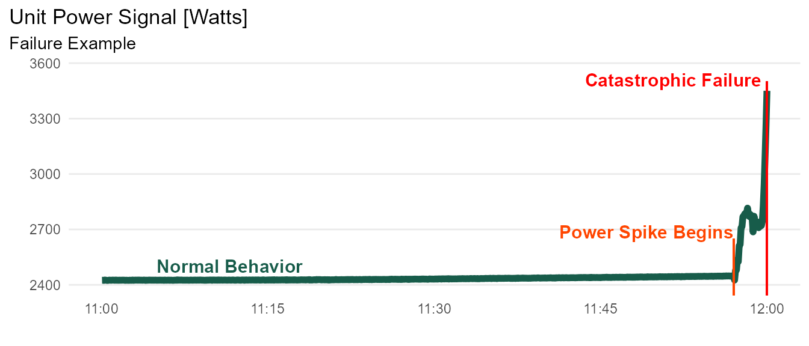
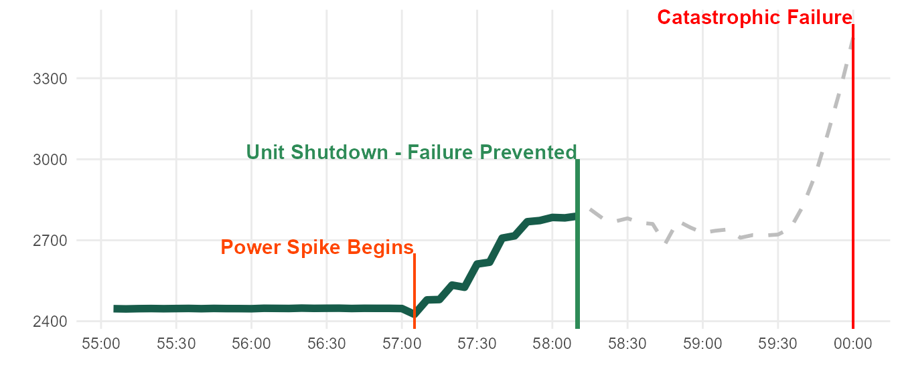
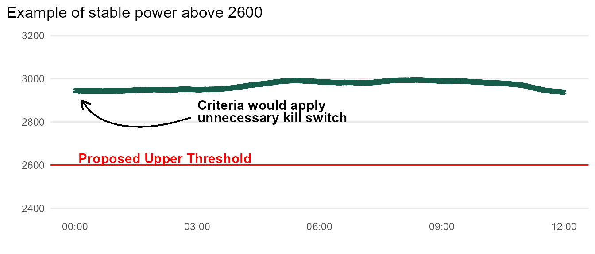
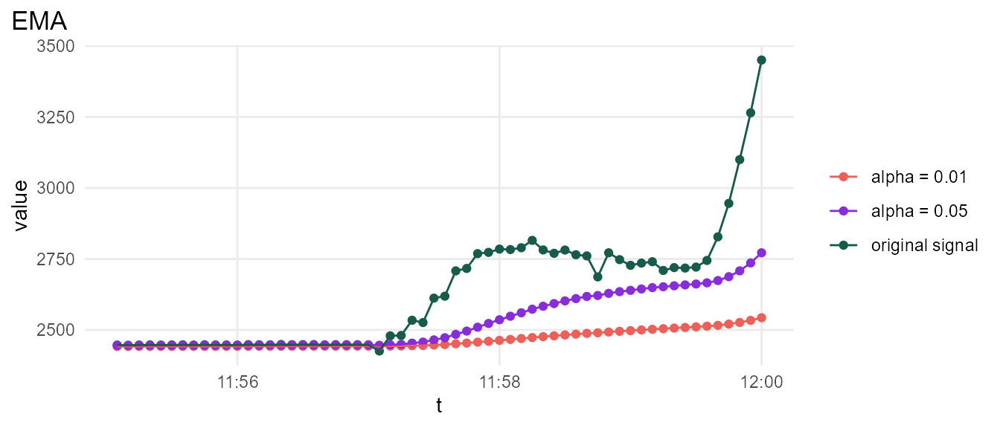
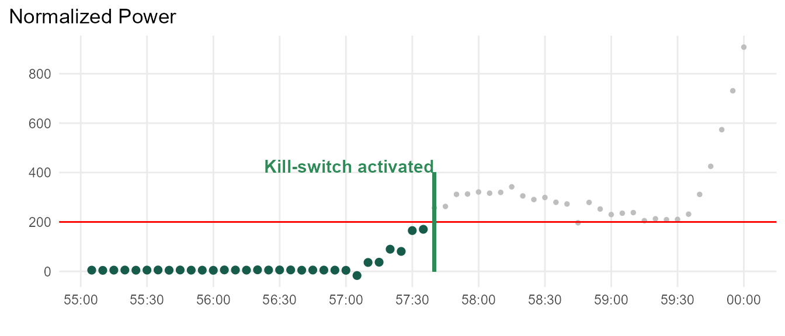
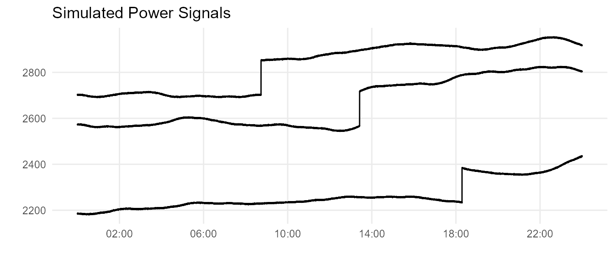
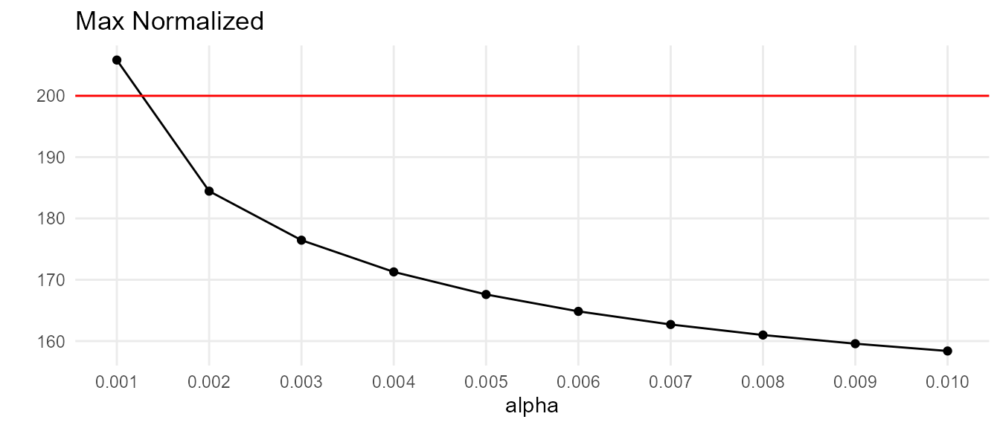
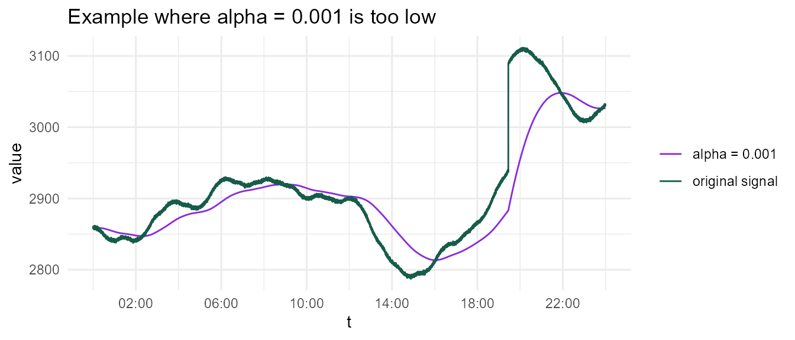

This case study draws inspiration from a real-world manufacturing problem. I’ve included extensive background material, but feel free to jump ahead to where meandr is actually used.
Suppose we are monitoring a fleet of equipment, \(E\), containing \(n\) independently operational units.
\[e_i \in E\] \[i \in [1, n]\]
Each unit \(e_i\) operates continuously to fulfill production needs. This does not mean all units are required to operate simultaneously - the size of fleet \(E\) allows for individual units to be taken out of service for routine maintenance.
Despite a well-regimented maintenance plan, catastrophic failures often occur with individual units. Figure below illustrates typical equipment failure.

The operation typically regards these failures as inevitabilities inherent to the fleet. However, this strategy has become unsustainable with the increasing burden on resource allocation. A more proactive approach is needed to effectively reduce the number of failures.
A closer look shows the power spike is prolonged over the course of 3 minutes. This is good news, since domain experts believe that catastrophic failures can be prevented if unit is shut down early in this window.

Data from each unit \(e_i\) is collected in real-time. If unit power meets a certain criteria, we can send a “kill-switch” interlock which will save the unit.
The monitoring system operates with the following constraints:
Revisiting the initial example, one might propose this criteria:

But this actually won’t work: there are many units that normally operate above 2600W, as shown below.

This means we need to get creative.
Ultimately, we are trying to detect unit power that suddenly deviates from its moving average. But due to constraint 1, we cannot utilize a simple moving average.
EMA is uniquely suited for this problem because it does not require past values beyond the 2nd order (\(t - 1\)). We can create a parallel bin for \(EMA_{e_i}\).
\[EMA_{e_i}(t) = \alpha * Power_{e_i}(t) + (1 - \alpha) * EMA_{e_i}(t - 1)\]
EMA performance for 2 values of \(\alpha\) is shown below. For this example, \(\alpha < 0.01\) is sufficient.

We define an additional parallel bin producing a normalized power signal.
\[Normalized_{e_i}(t) = Power_{e_i}(t) - EMA_{e_i}(t)\] Finally, we can define a new criteria that prevents this failure without inadvertently killing the fleet.

The graphic below illustrates the criteria logic.
We only want to apply a kill-switch interlock when absolutely necessary. There are multiple reasons why interlocking too much is undesirable:
Bottom line: the interlock must be carefully optimized so that it’s only triggered by legitimate failure spike.
Most of the historical data at our disposal is well-behaved. Testing on this data will not provide sufficient confidence that our criteria will achieve a satisfactory signal-to-noise ratio. We want to recreate the worst case scenario: power signal that behaves erratically, but is not a failure spike.
Domain experts have provided us with some basic parameters concerning power behavior:
Let’s use meandr to bring these specifications to life! We’ll create sample power signals for 24 hour increments.
library(dplyr) library(tidyr) library(ggplot2) library(lubridate) library(meandr) # we will simulate 100 signals n <- 100 # create time vector t0 <- as_datetime("2020-05-02 00:00:00") t_vec <- seq(t0, t0 + dhours(24), # simulating 24 hours by = dseconds(5)) # 5 sec sampling period # Since we are simulating worst-case scenario, every sample will contain 100W shift shift <- 150 # Create simulated data set.seed(2) data <- tibble( i = 1:n, unit_avg = runif(n, 2000, 3000), # Most units operate between range of 2000W - 3000W. shift_point = sample(t_vec, size = n, replace = TRUE) ) %>% rowwise() %>% mutate(data = list( meandr::meandr(n_points = length(t_vec), # match t_vec seed = i) %>% mutate(t = t_vec, # override default meandr t vector f = unit_avg + f * 100, # Gradual fluctuations of +/- 100W per day. f = f + rnorm(length(t), sd = 1)) # Hardware noise ) ) %>% unnest(cols = data) %>% mutate(f = if_else(t > shift_point, f + shift, f)) # apply shift
Here is an example of a few curves. Looks good so far!

Next, we need to simulate our monitoring system conditions by applying EMA, defined below.
ema <- function(x, alpha = 0.5) { out <- double(length(x)) out[1] <- x[1] for (i in 2:length(x)) { out[i] <- alpha * x[i] + (1 - alpha) * out[i - 1] } out }
As demonstrated earlier, if \(\alpha\) is to high, EMA will track original power signal too closely.
For instance, \(\alpha = 0.001\) appears to be suitable for the below curve. But given our simulation characteristics, is there a curve where EMA falls sufficiently behind an upward trend that an upward spike pushes the normalized value over 200?

library(purrr) max_normalized <- tibble(alpha = seq(0.001, 0.01, by = 0.001)) %>% mutate(max_normalized = map_dbl(alpha, .f = ~ { data %>% group_by(i) %>% mutate(normalized = f - ema(f, alpha = .x)) %>% ungroup() %>% arrange(desc(normalized)) %>% pull(normalized) %>% .[[1]] }))
As it turns out, there is a hypothetical curve where \(\alpha = 0.001\) would be too low. 
